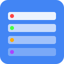

탭을 자동으로 그룹화하여 더 나은 브라우징 경험을 제공합니다.
도메인별로 탭을 자동으로 그룹화하여 정리합니다.
각 사이트의 브랜드 색상으로 그룹을 구분합니다.
자주 사용하는 탭 구성을 저장하고 복원합니다.
브라우저 재시작 후에도 탭 그룹을 복원합니다.
현재 열려있는 탭들을 어떻게 처리할까요?
현재 열려있는 모든 탭을 도메인별로 그룹화합니다. 권장: 많은 탭이 열려있을 때 유용합니다.
기존 탭은 그대로 두고 새로 열리는 탭부터만 그룹화합니다. 권장: 현재 탭 구성을 유지하고 싶을 때 유용합니다.